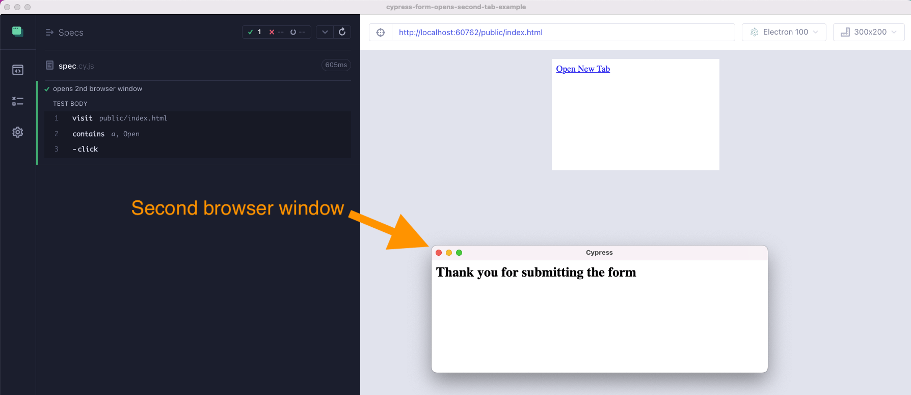
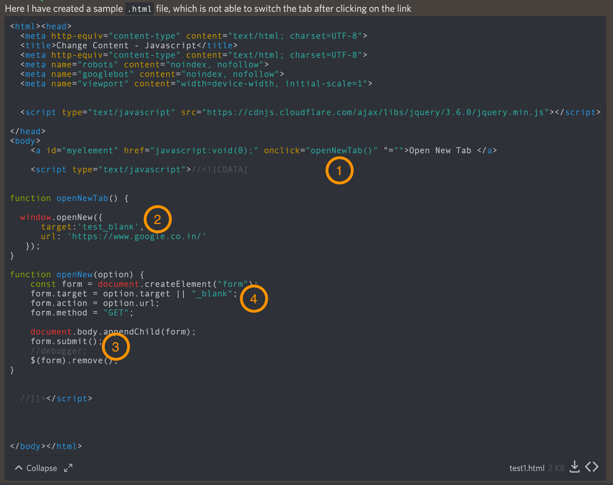
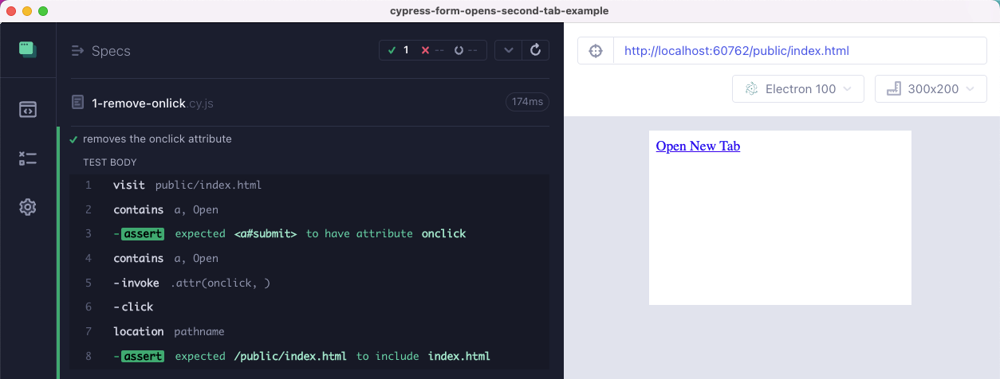
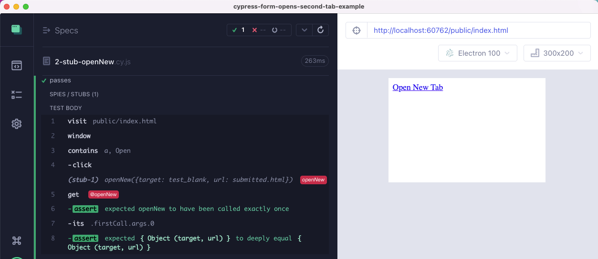
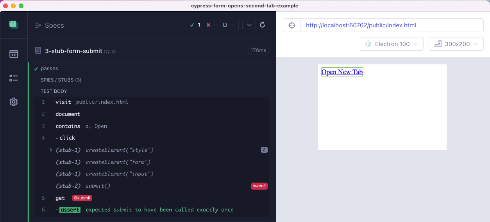
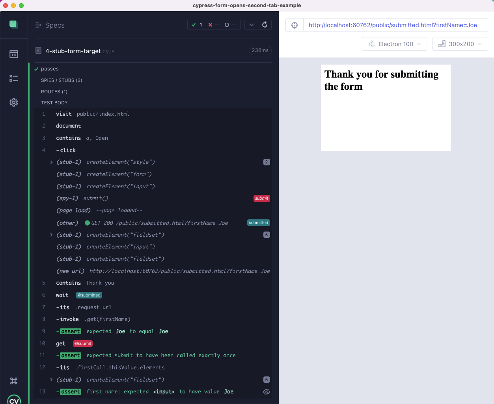

A user complained that a small Cypress test opens a new browser window and Cypress cannot continue with its test.
1 | it('opens 2nd browser window', () => { |

The user has provided a reproducible example, so great job! I have marked the important steps in the code that we will stub from our Cypress spec file.

Let's prevent the application from opening the second browser widow.
🎁 You can find the source code and the spec files in the repo bahmutov/cypress-form-opens-second-tab-example.
Remove the onclick attribute
The simplest solution to prevent the application code from running is to remove the onclick attribute marked with "1" in the code screenshot above. The application is using this attribute to call the JavaScript function, so by removing it we avoid opening the second browser window.
1 | it('removes the onclick attribute', () => { |

The test simply does nothing - it does not execute any of the application's code, which is probably not what we want. We want the test to run as much code as possible! The shown approach also would not work if the application attached the click event listener using addEventListener instead of using the element's attribute.
My rating of the above solution 1 out of 10 stars.
Stub the internal application code
The click calls the application code that calls another application function by using the window.openNew call. This is marked "2" in the code screenshot above:
1 | function openNewTab() { |
By calling the "openNew" as a window's property, the application allows Cypress to easily spy / stub the application's call.
1 | it('passes', () => { |

Using this approach we can confirm the user interface and the application code are working correctly. We can let the app's code run all the way to the "edge" and stub the low-level method use to make the final call that opens the second browser window. Thus I rate this powerful approach 6 out of 10 stars.
Tip: see more cy.stub and related code examples at my Stubs, spies, and clocks examples page.
Stub the form submit method
In the previous test, we have stubbed the application's method window.openNew. We can also stub pretty much any browser API. For example, our application is preparing a form to submit. Then it calls the form.submit() method, marked "3" in the code snapshot:
1 | function openNew(option) { |
The problem is the last call form.submit() - it submits the form to the server. We are interested in the form preparation, but don't want it to actually be submitted. Thus let's stub the form.submit method.
1 | it('passes', () => { |
The above test has a lot of comments explaining what we are trying to do: we want to keep using the document.createElement method, but if the application's code calls document.createElement('form') then we return the form instance with the stubbed submit method. Thus the application's code does everything, only the final browser submit call goes to our stub instance.

Cypress tests run in the browser, thus the same cy.spy and cy.stub methods work on the browser's own APIs like document.createElement. By letting the application code run all the way to the last form.submit() the test is almost end-to-end. Thus I rate this test 8 out of 10 stars.
Stub the form target property
Why does our form open the second browser window? Because the form has the target: test_blank property, marked in the code snapshot with "4".
1 | function openNewTab() { |
Just like <a target="..."> elements, the form can be loaded in the current browser tab by using the target: _self value. Let's adjust our spec to stub the form's target property and set it always to _self.
1 | it('passes', () => { |
The form is loaded in the same browser tab as the current page, and we can continue working with the form, as if we switched to the second tab.

The above test has many things going for it:
- it lets the form be submitted to the backend, and it verifies the submitted URL parameters by using cy.intercept command and the browser's own
URLAPI. - it verifies the form element and its input elements by getting them from the
submitspy
I rate the above test 9 out of 10 stars.
If only Cypress could control two tabs, then the test would earn 10 ⭐️.